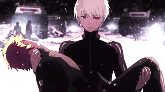
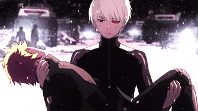
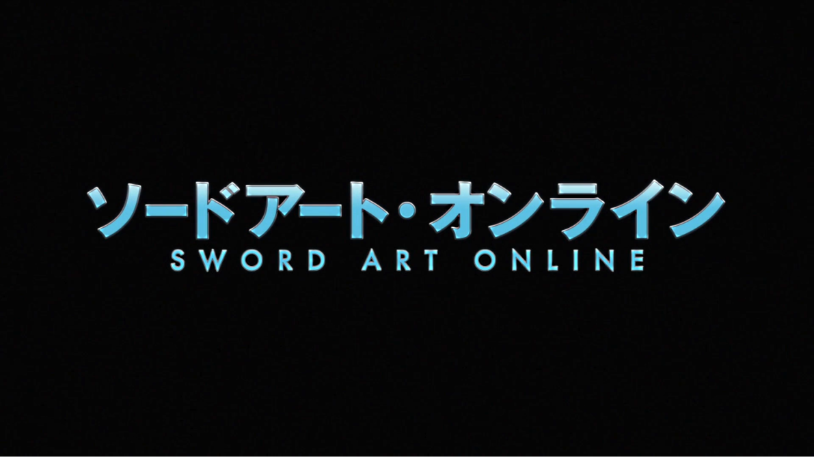
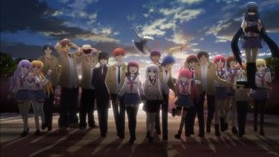
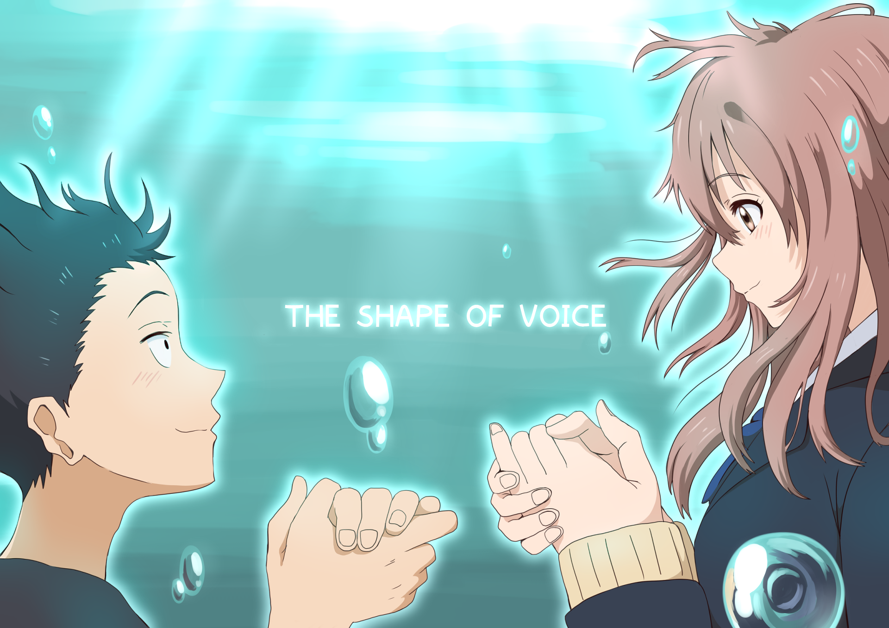
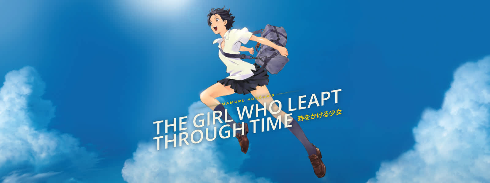
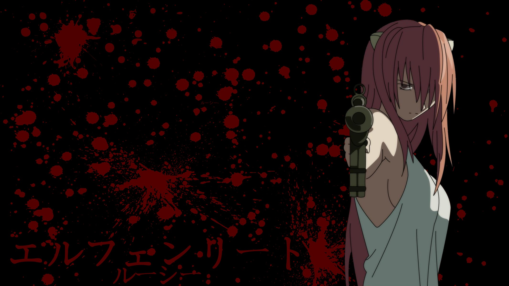
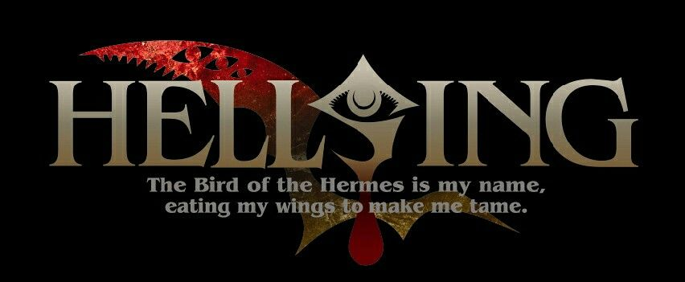
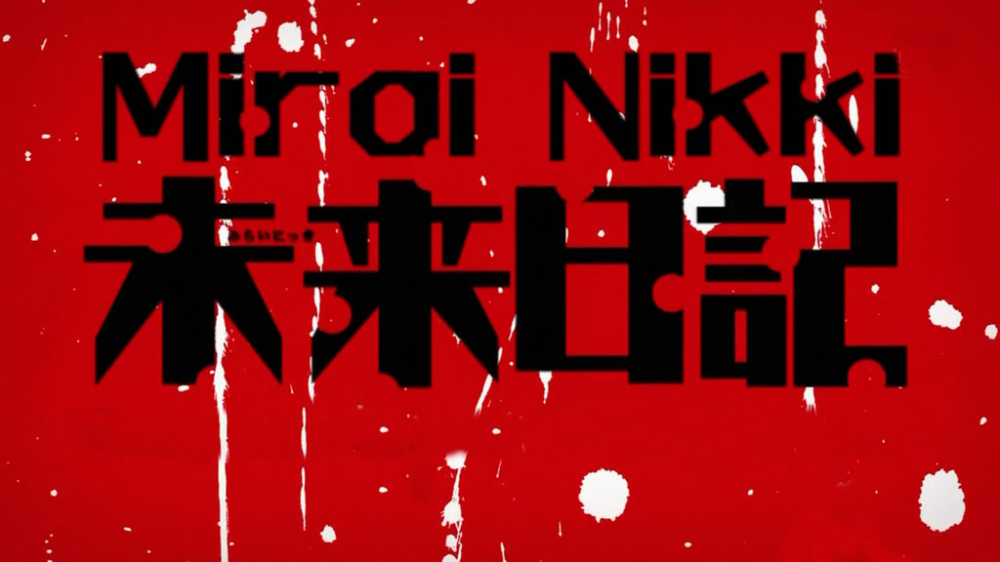
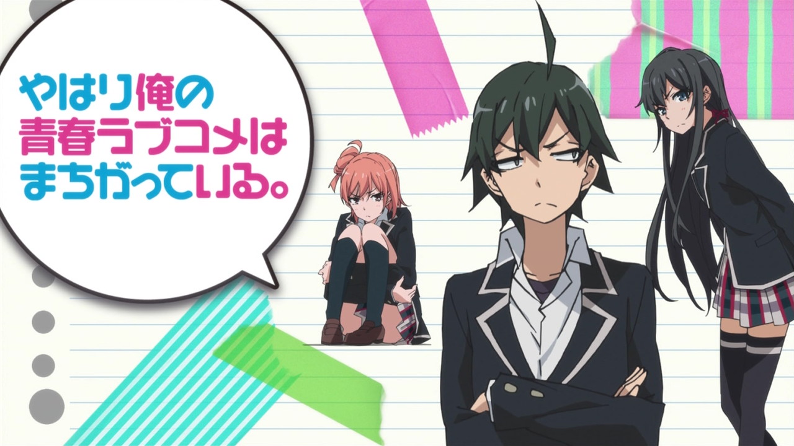

Blog

So it all began back when I was in 8th standard. I was a quiet and introverted guy who used to speak with only one or two other guys and they were kinda friends to me. Staying quiet all the time, listening to lectures, studying and getting lost in my own imagination of cartoons used to take most of my day. I was a boring guy whose only interest was in cartoons which I used to watch in my good old days. Most common types coming those days were Shinchan, Doraemon, Ben 10 and blah blah... But the ones which took most of my interest were Idaten Jump, Zatchbell and Pokemon. Man, I loved them a lot and always used to draw those characters.
Later, in 11th standard a new show named Dragonball Z started airing on Toonami channel. I started watching this show everyday for half an hour and later I realized that I had been addicted to this show. I started searching about it on the internet and found many sources which show cartoons like this..(yeah, Dragonball Z was a cartoon for me back then.xD). I found a black and white book filled with dbz characters and the dbz story. As I started reading it, I got addicted to it too.. and later realized that this thing is known as Manga and it's Anime that I am watching not a cartoon. After I finished it, I was kinda feeling depressed that I have nothing to watch now..so I started my research and found that this show has a different backstory too. Then I started watching the backstory but the strict schedule was still the same, half an hour per day. I used to search a lot about Anime and found it very interesting. But then came the 12th standard and I had to leave all this cause I was preparing for jee.
After I finished my 12th and all the entrance exams I was introduced to a guy in SRM who's bigger fan of Anime than me.. He introduced me to many good Anime that I never heard of..(Anime is all it takes for Otakus to be friends :D) I started watching a lot of Anime in my free time and finished series one by one. I found that I am addicted to this thing and not even a single day of mine goes without watching Anime. I have covered a lot of series till now and I have learned a lot from them.
Along with the dose of entertainment, Anime is also something which teaches me a lot about Life. Yahari Ore no Sheishun Love Comedy is a must watch for you all. Each and every episode of every single Anime tells you something deep. The lessons I get from Anime are very deep and not something simple like Hardwork is the key to success and blah blah.. Whenever I watch an anime I connect myself to it's story & when I finish it I feel kinda sad that I can no longer be a part of this journey. Anime stories are very deep and the best. Perhaps I can say that Anime is the best thing I've seen and experienced in my life. I still am amazed that how japanese people can create so good stories in each and every single Anime. It's like they have this thing in their mind 'The best or nothing'. I love their creativity in Anime. I wish to go to Japan one day and explore it's rich heritage and meet my favourite anime authors if possible ;).
Dragonball is one of the greatest anime produced by Akira Toriyama. The series is about childhood of Son Goku, a strong naive boy living alone in a forest. This mysterious monkey-tailed boy possessed a golden heart and an enormous power which even he is unaware of. The story becomes interesting when he meets a girl Bulma and joins her to gather all the seven Dragon balls. Son realizes that he is not strong enough to fight the greedy guys like 'Pilaf gang' and their hurdle 'The Red Ribbon Army' who want Dragon Balls just to fulfill their greedy needs. He meets chichi after saving her village who desired to marry him in future. Goku undergoes rigorous training regimes under the martial artist Kame(Mr. Roshi) in order to fight in the Tenkaichi Budokai that attracts the most powerful fighters in the world. A monk named Kuririn becomes his training partner and rival, but they soon become best friends. After the tournament, Goku sets out on his own to recover the Dragon Ball his grandfather left him and encounters the Red Ribbon Army. He almost single-handedly defeats the army, including their hired assassin Taopaipai, whom he originally lost to before, but after training under the hermit Karin, now easily beats. Kuririn is killed after the tournament and Goku tracks and is defeated by his killer, Piccolo Daimao. Goku then begins his battle with Piccolo Daimao, who, just before dying, spawns his son Piccolo. Goku trains to beat his son in the next tournament which he does after facing lot of pain and struggle in an epic battle.
The series consists of total 153 episodes.

Dragonball Z picks up the story of Goku 5 years after the end of Dragonball. Goku has now a son Gohan. The things get interesting when a humanoid alien Raditz arrives Earth in search of Kakarot(original name of Goku) who was sent to earth to destroy it. He finds Goku and reveals that Goku is his younger brother and they are from a different planet named Vegeta and their race is known as 'Saiyans'. Goku suffered a brain injury and lost his memory about his mission and becomes friendly with everyone though his grandpa faced problems to raise him because of his aggressive nature but later it all settles up. Goku join forces with Piccolo to defeat him. Goku had to lose his life in order to kill Raditz. Dead Goku reaches the King Kai's planet and trains under him. In the mean time piccolo trains Gohan for fights. Two more saiyans Vegeta and Nappa after several years come to earth after knowing that Raditz had been killed. Piccolo n Gohan along with others fight them but lose. Goku was brought back to life using Dragonballs and in a battle with Vegeta and nappa; he defeats nappa easily because of his training but vegeta was a tough one. He barely manages to defeat vegeta with help of Krillin and Gohan but allows him to escape because of pity.Gohan, Krillin and Bulma depart for Namek in order to use these Dragon Balls. They discover Lord Frieza, the name which whole universe fears is already there seeking dragonballs for eternal life. Vegeta also arrives for dragonballs and had many battles but no one was able to defeat Ginyu Force. Goku after training arrives at Namek and takes out the force easily. the epic battle with Frieza himself comes to a close when Goku transforms into a Super Saiyan for the first time and defeats him.This battle is said to be the longest and most epic battle in anime history. Upon returning to earth, Goku meets Trunks a time traveller who tells him about Androids who want to kill Goku to take revenge about rrb army that Goku destroyed when he was a kid. During this Cell emerges and absorbs androids to attain his perfect form. Goku dies as he fights cell in a deadly battle. Gohan attains his ssj2 form due to the anger against cell for killing innocent and avenges his father. He was able to kill Cell with the most epic Kamehameha which drains all of his life energy. After Goku is revived again he meets his second son Goten. Supreme Kai arrives and tells them about the greatest danger to Earth Babidi who's making the most evilest thing 'Majin Buu' to rule earth. He had many epic battles against Babidi. He even had to fight Majin Vegeta.(This was most epic battle between two Saiyans.) Vegeta realizes that Goku is always one step ahead of him not because of his greediness to power but his spirit to save the innocent and ones he love. Also, his never give up attitude makes him a legend. Finally, Goku was able to destroy buu after several fail attempts with the Spirit Bomb.
The series consists of total 291 episodes.
Goku now works as a farmer to support his family. A new threat Beerus the destruction god of Universe 7 appears. After awakening from decades of slumber, Beerus tells Whis, his attendant, that he is eager to fight the legendary warrior whom he had seen in a prophecy known as the Super Saiyan God. To protect Earth, Goku transforms into the Super Saiyan God to fight Beerus by using the power of five Super Saiyans, which includes Vegeta, Gohan, Son Goten, Trunks, and the baby in Videl's womb. Despite losing, Goku's efforts appease the God of Destruction enough that he decides to spare the planet. While Goku and Vegeta leave with Beerus and Whis to train for a year, the remaining remnants of Frieza's army arrive on Earth in search for the Dragon Balls to revive Frieza. Frieza gets revived and achieves a new form Golden Frieza who comes to earth to take revenge from Goku but gets defeated by Goku and Vegeta with the help of reversing time technique that Whis posses. Champa, Beerus's brother and God of Destruction of Universe 6 challenges Beerus to a tournament between both Universe strongest fighters. Each match in the tournament shows different surprises and abilities. Most interesting part comes during the fight between Goku and Hit, when Goku beats the time lapse technique of Hit and goes Super Saiyan Blue with 100X Kioken. Goku forfeits the match to make Hit fight with his full strength. The heavy form makes a toll of Goku's body. Hit gets inspired from Goku to work even more harder. Later, Future Trunks reappears and brings news of a new and powerful enemy resembling Goku, who is known as Goku Black. Goku and Vegeta go in future to challenge him but return back defeated. They find that this fake Goku is Supreme Kai apprentice from the 10th Universe named Zamasu. He planed to wipe out all mortals but was defeated by Goku, Vegeta and Future Trunks in an epic battle. After that, the Grand Zeno holds a new tournament called Tournament of Power and includes all 10 universes in it. The losing ones will be erased. Goku, Vegeta, Gohan, Krillin, Android 17, Android 18, Piccolo, Tien, Master Roshi, and a temporarily revived Frieza join the tournament as representatives for the 7th Universe to protect it. During the fight, Goku briefly attains a new godly form known as Ultra Instinct. This form improved his reflexes at the godly level and made him even more stronger whereas Vegeta achieves a dark blue form. The tournament ends with Goku and Frieza taking Jiren down along with themselves, which leaves Android 17 the sole contestant remaining and the winner of the Tournament of Power. They wish all erased universes back to life. Goku vs Kefla & Goku vs Jiren were the most epic battles of the series.
The series consists of total 131 episodes.


Tokyo Ghoul is a dark anime about Ghouls, a human like looking beings who can only rely on human flesh to survive. No one can identify a ghoul normally unless one captures them while they are feeding on someone. Ghouls have one special predatory organ 'Kagune' which they use for combat. Also, when ghouls are exited about something or are hungry their eyes turn Black and irises turn red with kinda red veins around the eyes. There is a half-ghoul thing which can be produced as an offspring of a ghoul and a human (OR) by transplanting the organs of a ghoul to human body. To hunt down ghouls a special organization called CCG is created by humans. A silent and introverted guy Kaneki who manages to make a friend Hide. He once encounters a girl Rize Kamishiro and develops love for her. But sadly, she was a ghoul. She takes him to a prone location. While feeding on him she was taken down by some heavy loads that fell on her. Kaneki founds out that he had undergone a surgery and rize's organ are transplanted to his body. He then struggles with his life to be normal but his life won't be normal anymore. He couldn't eat normal food, he had to rely on human flesh. The ghouls who manage the coffee shop "Anteiku" take him in and teach him to deal with his new life as a half-ghoul. Some of his daily struggles include fitting into the ghoul society, as well as keeping his identity hidden from his human companions, especially from his best friend Hideyoshi Nagachika. I ghoul girl Touka Kirishma tried to teach him to hunt humans. When CCG investigators Kisho Arima and Kotaro Amon kill the mother of small ghoul girl of Anteiku, touka tries to kill them but fails. Kaneki-ken along with his struggle tries his best to save his fellow ghouls. The series ends with Aogiri breaking into the caffee and taking down the ghouls. Jason the insane human gets interested in kaneki as he smells rize's blood inside him( as rize was his old target). He takes him to an isolated chamber where he tortures the hell out of him. With centipedes inside his ears, syringe with pain liquid in his eyes and continuously peeling of his hand and feet nails.. That torture is hell of a thing to watch. As, ghouls have ability to regenerate their body parts. So, jason keeps doing the torture until a bucket gets filled with kaneki's blood. Kaneki finally realizes that he is not the one who is wrong....Whats wrong is this world! who he was trying to save. As people are cruel and don't care for anybody. He accepts the rize's spirit inside him and goes berserk breaking his chains and attacking Jason with his kagune.
That last episode is a must watch.This anime has the best music.
Two more seasons have been released already.
The series consists of total 12 episodes.
 

Death Note is loved by a lot of people not only for it's story but also for it's smartest characters L and Light Yagami. A highschool student Light founds a weird notebook with some kind of rules written in it.As he holds the notebook he is able to see a monster Ryuk who is a Shinigami, the death god. He tells him everything about the notebook that it's a death note and whoever's names is written on it dies according to surrounding conditions or atleast by a heart attack within 40 seconds, only if the the holder knows the face of the one he wants to kill. He starts killing terrorists and makes an announcement as he is kira, the god. The story takes a turn when L the smartest & most intelligent detective takes the case and starts searching for kira. Both of them meet at a point in the series and light uses best methods to hide his personality. He too joins L to find Kira.xD L always was aware that light is kira but was not able to find a valid proof to prove it. The series has some mindblowing episodes. Light was able to kill L but he had to abandon the Death note for sometime. Then his battle begins with Near the next successor of L. But he loses everything at last and gets caught. Ryuk himself kills Light.
The series consists of total 37 episodes.
Edward and Alphonse Elric live in village Resembool with their mother and their father Hohenheim having left without a reason. Their mother dies of plague, so both kids who already were good with Alchemy tried to bring their mother back but instead Alphonse loses his own body and Edward loses his one arm and a leg because of a rule 'In order to gain something in Alchemy, something of equal value must be lost'. But still they only manage to make a homunculus. Roy Mustang invites them to become State Alchemists. They both work hard to pass this exam and finally do it. Elric brothers search for the Philosopher's Stone to bring their mom back and also to bring Alphonse's body back. In their journey they meet Scar who target State Alchemists for his people's genocide. Winry the mechanic meets Dr. Marco who tells them that Philosopher's Stone is made up of human souls. After the Homunculi hindered them by destroying the hidden laboratory, the brothers are joined by Winry as they attempt to find an alternate means to restore themselves. At the same time, Mustang's friend Maes Hughes continued the Elrics' research and ends up murdered by a disguised Envy when he learned of the Homunculi's plan. After their defeat at the hands of Scar, the Elric Brothers decide to visit their teacher Izumi Curtis in the city of Dublith, hoping that she might be able to train them in higher forms of alchemy. which backfires when she discovers their failed attempt at Human Transmutation. They learn and then had a lot of battles with the corrupted government who's performing Alchemy for greedy purposes. They then fight Lust, Glutony, and Greed. They destroy their plan to kill a hell lot of people to make the philosopher's stone yo attain more power. And finally Edward gives his own body performing a human transmutation in order to bring his brother's body back.
This anime is one of the most emotional one.Also, it's music is great.
The series consists of total 37 episodes.

The story is about a time when giant creatures known as titans used to feed upon humans and humans built several giant walls around their territory to protect themselves from titans. During an encounter, when Eren's mother is eaten by a titan he swears to protect this land from these creatures. He and adopted sister Mikasa train under the scouts to become one of them to destroy titans. Colossal Titan appeared and history repeats itself. In the ensuing battle, Eren appeared to have been killed when he sacrificed himself while saving Armin from being eaten by a bearded Titan. Things appeared bleak until Mikasa and Armin encounter a Titan that uncharacteristically attacks the other Titans with raging fury, the creature ultimately revealed to be Eren. Eren is then taken under command of Captain Levi. The Scouts are attacked by a Female Titan who attempts to capture Eren while wiping out Levi's subordinates. Though Eren was saved, the expedition ended in failure while Armin determined that the Female Titan is fellow cadet from their class named Annie Leonheart. They had many encounters with the titans. and the story ends with revealing who two high ranking Titans were from the inner human society.
The series consists of total 12 episodes.
.jpg)
Hunters are the elite humans who are capable of great strength and tactics. Gon Freecs a young boy wants to become a hunter and search his father Ging. So, he leaves his birth island to give the Hunter exam which happens once a year with candidates from whole over the world. He meets Kurapika and Leorio in journey In hunter exam, he clears many obstacles and meets a boy Killua who is from an elite assasin family. He confronts Hisoka in the exam who doesn't kill him as he believes to fight him when he's capable of. He and his friends clear many kind of obstacles. He founds Kurapika wants Hunter License to avenge his race with Phantom Troupe who took their lives for their red eyes. He becomes a good friend of Killua and goes for search of his father after the exam. He fights the Chimera ants and becomes berserk against Pitou for killing his father's subordinate. He gets a heavy toll on his body because of that and becomes complete paralyzed. Killua uses his sister Alluka's powers to improve him. Finally, the chimera king lives after being revived by his guards after his loss in battle with Netero.
The series consists of total 148 episodes.

.jpg)
Lelounch is a highschool student with high iq. He gets caught with terrorists and misunderstood for being one of them. CC makes a contract with him which will give him Geass power which can control anyone's mind. Lelounch uses japanese revolutionaries against Britannia empire to make his father suffer for what he does to his mother. He uses a knightmare and orders Area 11 members to do as he says to survive. he kills prince Clovis. He becomes "Zero" the masked leader of the Order of the Black Knights, a group of freedom fighters aiming to protect the strong from the weak while also liberating Japan. He is aided by C.C., the green haired girl who gave him his ability and who is revealed to be immortal. He learns Suzaku Kururugi is the pilot of Lancelot and lures him in a trap on an island. His geass becomes permanently active and accidently he orders princess Euphemia to kill Japanese. A lot of battles happen between him and Britannia but atlast he was able to meet his father in a throne and kills him. He then takes whole rivalry inside him to make the world a better place to live and makes Suzaku Kururugi the new Zero before dying.
The series consists of total 25 episodes.
Kirito, a gamer starts playing a virtual reality game SAO. In SAO, on the first day players are told about unexpected rules that no one can leave the game until played to the end.
The player who dies inside the game dies in real world too. They have to complete all 100 floors of the game in order to clear it. Many players start forming guilds in order to
clear it whereas kirito is a solo player. Later he meets Asuna who is a member of a guild. They both become friends and start playing the game together. Her guild member tries
to kill Kirito but she saves him. They both fell in love and marry in the game and buy their own house and an AI becomes their daughter. They cleared the game once they finished
creator of the game inside the game. Kirito wakes up in real world but Asuna is still locked inside by the game manager of a different game. Kirito plays that game and after facing
many odds he saves her from manager's lust. They meet a girl infected by a harmful virus who can't survive longer. She plays the game with both of them. Kirito manages to makes a
mechatronic device to talk to the AI. They try to help her but she dies.
The series consists of total 25 episodes. Highschool students who had died in real world due to facing many traumas come to a different world to fulfill their regrets. Otonashi
comes to this world with no idea that he had died. An anti-god team takes him in and explains him that they are fighting against god
He will experience pain but his wounds will heal in this world. This group keeps fighting with Tenshi who they believe is a messenger
of God. After knowing she's not, they join forces and fight toghether the one manipulating this world and tenshi's harmonics.
They finally understand the meaning of this afterlife and fulfill their regrets and go to heaven one by one.
The series consists of total 25 episodes.


Ak-Rating:8.7
11.Angel Beats!

Ak-Rating:8.4
12.Kimi no namwa

Ak-Rating:8.7
13.Koe no Katachi

Ak-Rating:8.5
14.The Girl who Leapt through time

Ak-Rating:8.2
15.One Punch Man

Ak-Rating:8.9
16.Steins Gate

Ak-Rating:9.2
17.Highschool of the Dead

Ak-Rating:7.7
18.Blood Lad

Ak-Rating:7.9
19.Elfen Lied

Ak-Rating:8.7
20.Anohana
Ak-Rating:7.9
21.Karakai jouzu no Takagi-san

Ak-Rating:8
22.Baccano!
.jpg)
Ak-Rating:8.4
23.Highschool DxD

Ak-Rating:8.4
24.Boku no Hero Academia

Ak-Rating:9.6
25.Kyoukai no Kanata

Ak-Rating:8.7
26.Hellsing Ultimate

Ak-Rating:8.8
27.Mirai Nikki

Ak-Rating:8.9
28.Akame ga Kill

Ak-Rating:9.1
29.Yahari ore no sheishun Love Comedy

The best Anime I've ever seen.
Ak-Rating:9.8